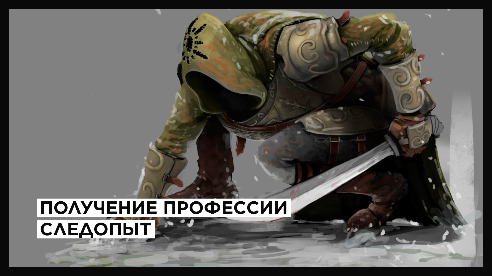

Следопыт прекрасно ориентируется в лесу, в степи и в поле, знает повадки зверей и их тайные тропинки, названия растений и области их произрастания, это позволяет ему быстрее перемещаться и эффективнее собирать ценные ингредиенты для приготовления зелий и эликсиров. К сожалению, все таланты следопыта оказываются практически бесполезными в душных и замкнутых подземельях, шахтах, сложных сплетениях лабиринтов.
— Описание профессии
Это одна из самых лёгких в плане изучения профессий: координаты всех цветков известны, меняется лишь комбинация их появлений для каждого игрока. В режиме исследователя, когда Игрок знает лишь примерные локации появления цветков, получение профессии займёт около нескольких часов (суммарно есть примерно 380 клеток, на которых могут появиться цветы). Если же Игрок знает все 22 возможные координаты, то время на получение может составить 30-45 минут.
Для получения профессии следопыт Игроку необходимо взять соответствующее задание в Академии (Жилой район Больших комаров) и отыскать три редких растения:
| Мраморная лилия | Дикий пустынник | Северная орхидея |
 |  |  |
| Встречается в районе Серебряного озера | Растет в степях на границе Южных равнин и Мертвой пустыни | Встречается в предлесьях Нордского леса |
Если вы получаете профессию следопыт в первый раз — советуем пройти вышеуказанные локации без подсказки, так вы лучше изучите окружающий мир и познакомитесь с его обитателями.
Точные координаты: (-34, 5), (-30, 8), (-30, 19), (-19, 14), (-24, 15), (-20, 13), (-39, 4).
Точные координаты: (5, -17), (6, -19), (8, -19), (9, -19), (-8, -18), (19, -20), (29, -18), (16, -18).
Точные координаты: (30, 0), (29, 2), (15, 4), (19, -3), (19, 3), (22, 5), (26, 4).